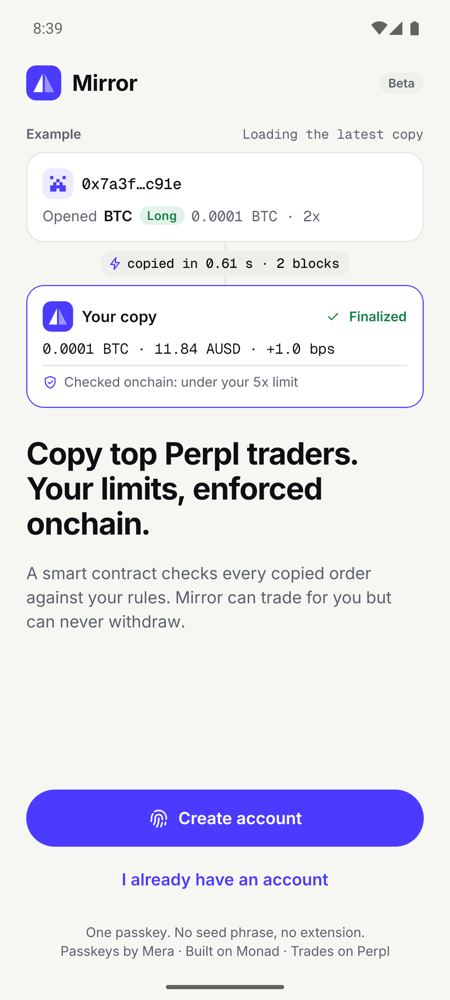
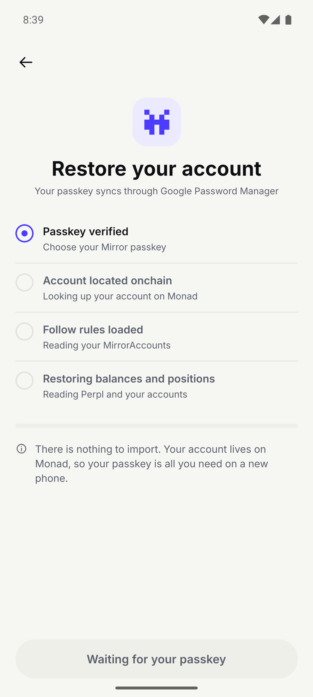
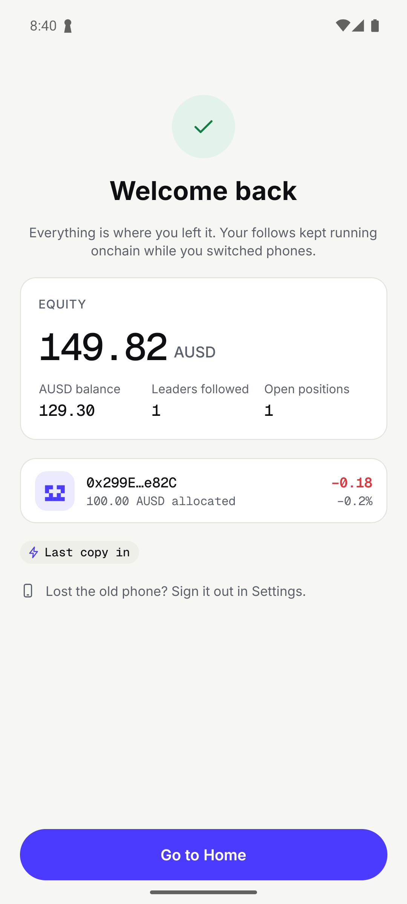
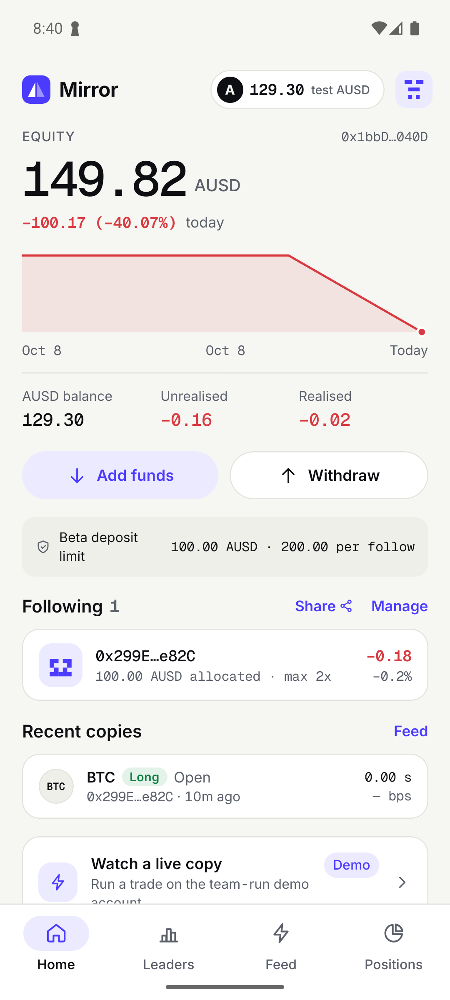
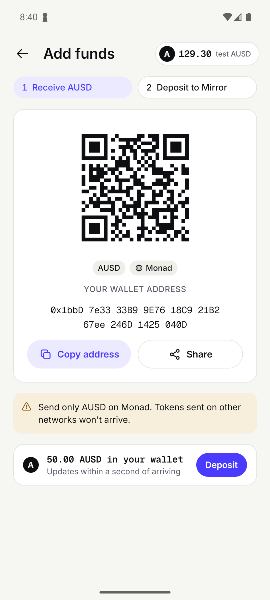
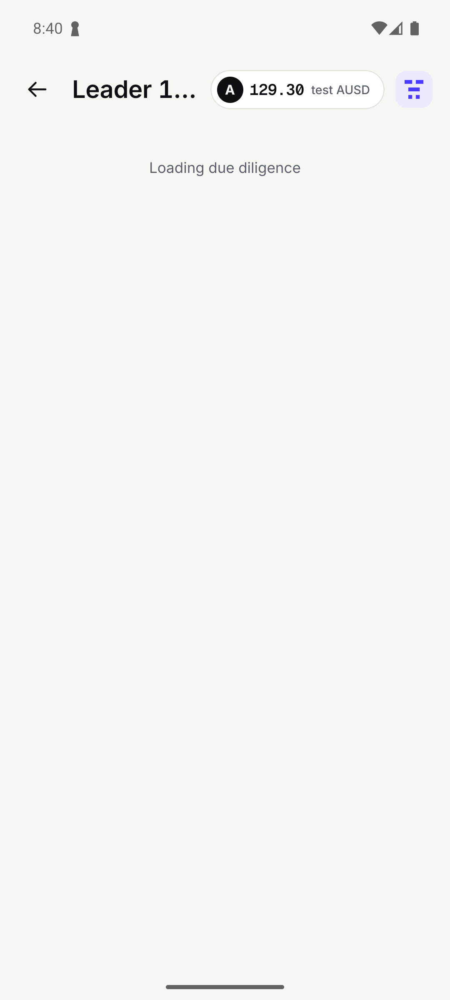
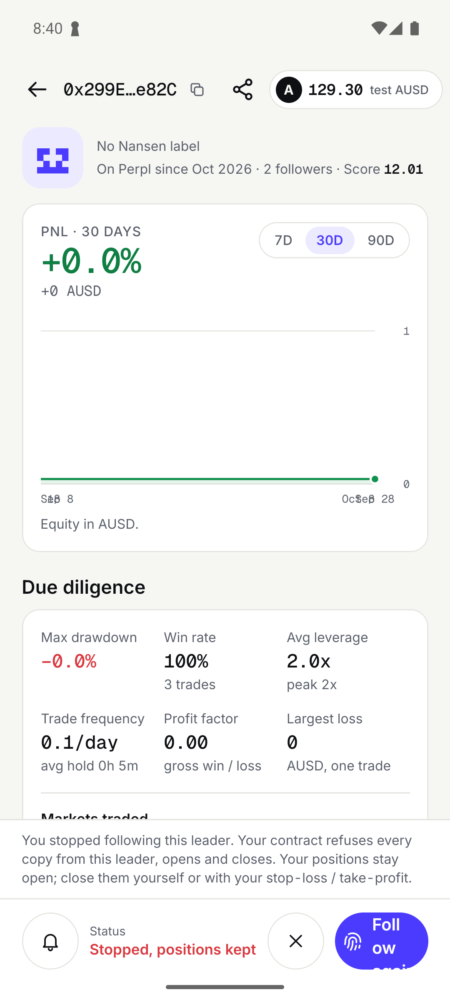

✓ 07b the test user's leader profile shows the onchain detach: "Stopped, positions kept"
addrB 0x1bbD7e3333B99E7618C921B267ee246D1425040D · detached yes · lotsB 50

01-emulator-5556-s8-launch.png 02-emulator-5556-s9-waitFor.png
02-emulator-5556-s9-waitFor.png
03-emulator-5556-s10-tap-id_onboarding.restore.png 04-emulator-5556-passkey-picker.png
04-emulator-5556-passkey-picker.png 05-emulator-5556-passkey-biometric.png
05-emulator-5556-passkey-biometric.png 06-emulator-5556-s11-after-passkey.png
06-emulator-5556-s11-after-passkey.png
07-emulator-5556-s12-waitFor.png
08-emulator-5556-s13-tap-id_restore.go.home.png 09-emulator-5556-s14-open.png
09-emulator-5556-s14-open.png
10-emulator-5556-s15-readText.png 11-emulator-5556-s18-shell.png
11-emulator-5556-s18-shell.png
12-emulator-5556-s19-open.png13-emulator-5556-s20-waitFor.png 14-emulator-5556-s21-expectResult.png
14-emulator-5556-s21-expectResult.png
15-emulator-5556-s22-shell.png 16-emulator-5556-s26-shell.png
16-emulator-5556-s26-shell.png 17-emulator-5556-s27-shell.png
17-emulator-5556-s27-shell.png 19-emulator-5556-s32-FAILED.png
19-emulator-5556-s32-FAILED.png